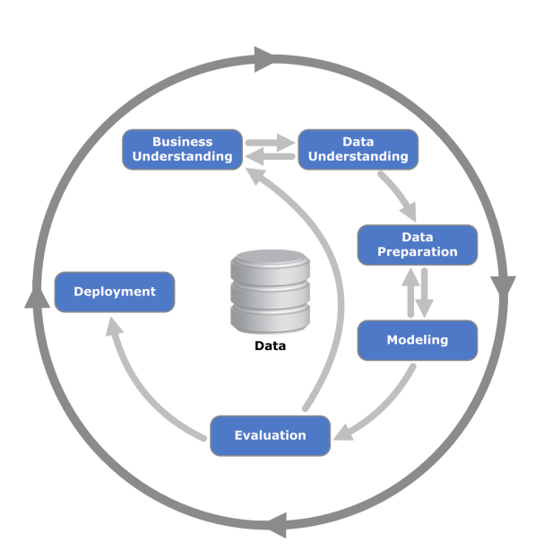

Lesson 01 - Your First ML project in R#
ML and Data Mining - Start your engines!#
Summary#
Data Mining Process

Data Science Lifecycle
“The lifecycle of a data science project is not definitive and can be altered accordingly to improve the efficiency of a specific data science project as per the research requirements.” DeZyre (2016)
Learning and evaluating classifiers - Validation and generalization of models#
Summary#
Model Generalization#
Overfitting: We say that the model is overfitting, that is, that it overfits the seen data, memorizing them, when the performance in the test data is much lower than in the training data.
Underfitting: We say that the model is underfitting, that is, that it did not adjust to the seen data, when the performance is low even in the training data.
Evaluating Predictive Models#
We need to evaluate each technique according to the objective of the studied problem:
The theoretical evaluation can be exposed, for example, by the inductive characteristics (bias and variance) of the applied models.
The controlled experimental evaluation must follow clear and transparent assumptions and procedures in order to guarantee the validity of the created models.
Apparent error: Calculating the classification error on the same data used to train the model produces optimistic estimates, which is why it was agreed to call this the apparent error of the model.
Sampling methods for estimating generalized error:
Holdout: A set of data is separated (e.g. 1/3) which are not used in training (derivation) of the model.
Problems:
Estimate is pessimistic
Does not allow to evaluate the variability of performance with different combinations of the data
How to choose the test set?
Random sampling (random subsampling): The holdout procedure is repeated several times, with equal proportions but random selection of the test set. Estimation of the error is aggregated (e.g. mean and standard deviation) from among the various test sets.
Problems:
It does not allow to evaluate performance in all existing cases (random selection does not guarantee that all cases have been used in a test set)
K-folds Cross-validation: The data is divided into K sub-sets of equal size; K-1 are used for training, and the rest is the test set. The procedure is repeated K times, in order to use all the subsets as a test. Estimation of the error is aggregated (e.g. mean and standard deviation) from the predictions in the K test sets.
Problems:
A portion of the training data is shared between the different runs (i.e. not independent).
Aggregate performance estimate is still dependent on the division made.
How to divide the data by the K groups?
Specifications:
It is usual to perform the complete procedure several times (M) to allow different definitions of the groups, with the estimate to be aggregated among all M * K executions
It is usual to stratify the groups, i.e., to force that both the training set and the test set have similar class proportions
There are several studies that discuss the validity of the method, namely with regard to the optimism / pessimism of each estimate.
Leave-one-out Cross-validation: Equivalent to an N-folds cross validation, where N is the total number of cases in the set. Estimation of the error is aggregated in the N predictions made. Probably the most accurate estimate of the model’s performance.
Problems:
Computationally more demanding
Usually used only in small data sets
Bootstrap: Samples are drawn from the data set, with replacement, of the same size as the initial set, serving as training sets. Unchosen cases (~ 36.8%) serve as a test set. Procedure is repeated several times. The error estimate is aggregated from all iterations (equivalent to leave-one-out, but with less variance).
Problems:
Computationally more demanding
Usually used only in small data sets